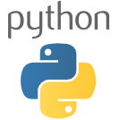
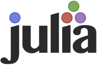
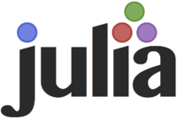
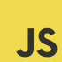
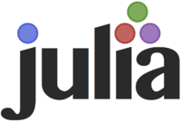
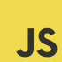
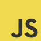
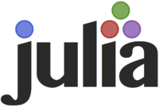
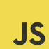

The data scientist's laboratory
 



 





Beaker is a polyglot code notebook that allows data scientists to analyze and visualize data and document their process using multiple programming languages. Users can seamlessly switch between their favorite languages and tools within a single document.